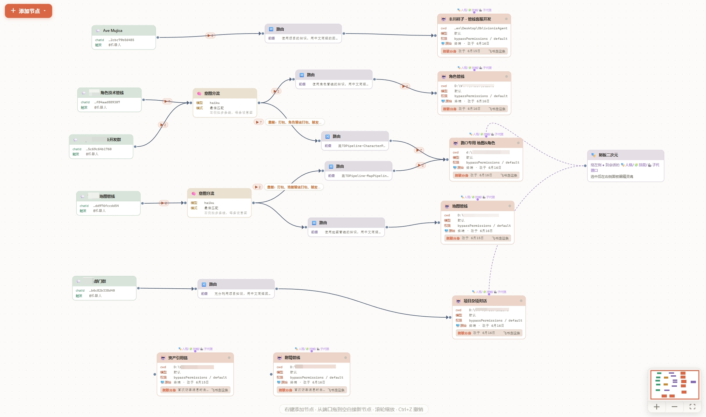
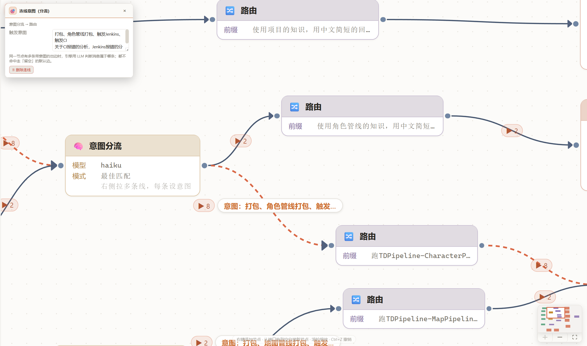
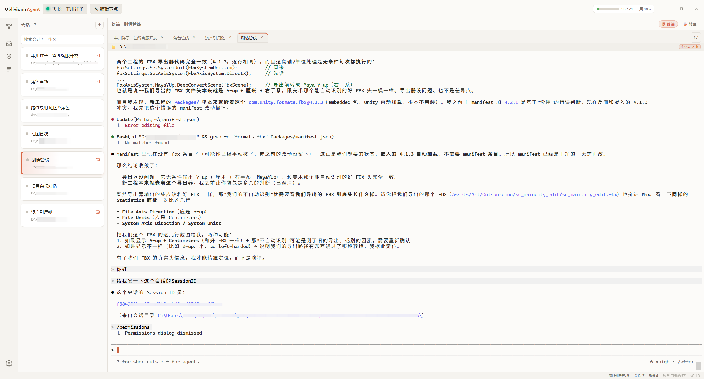
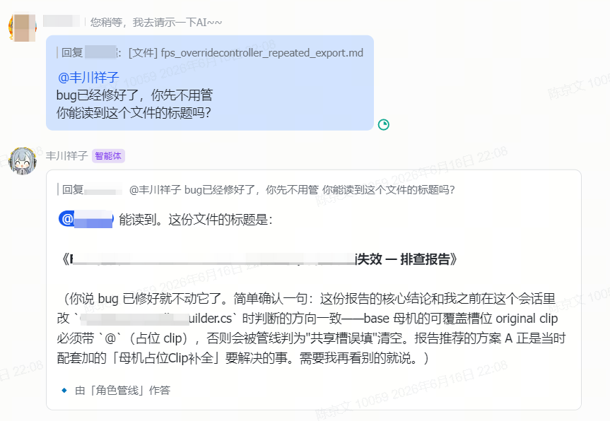
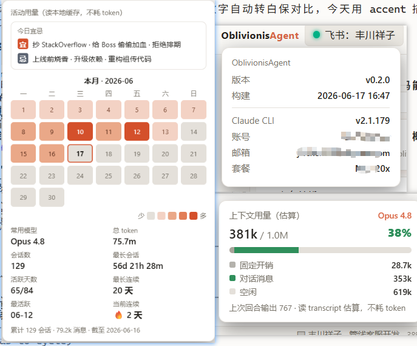
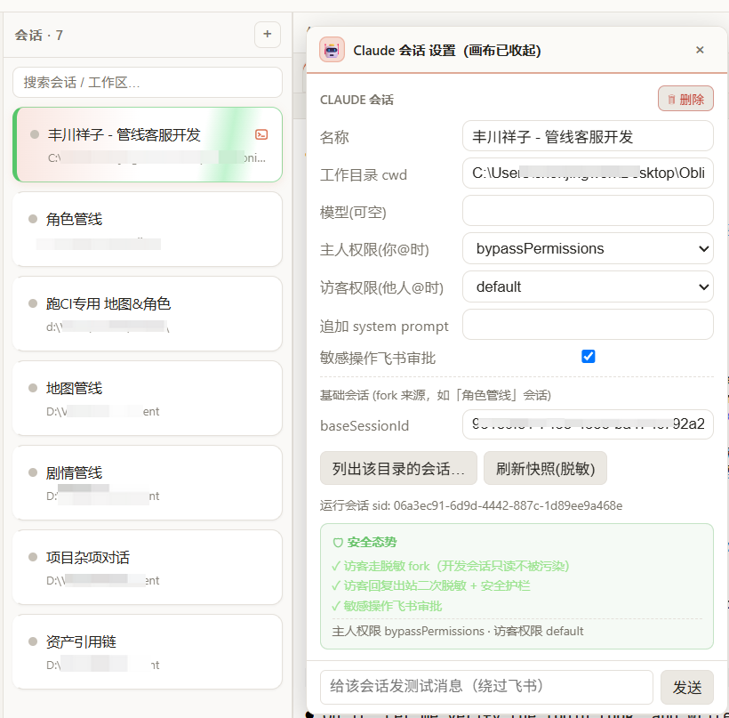
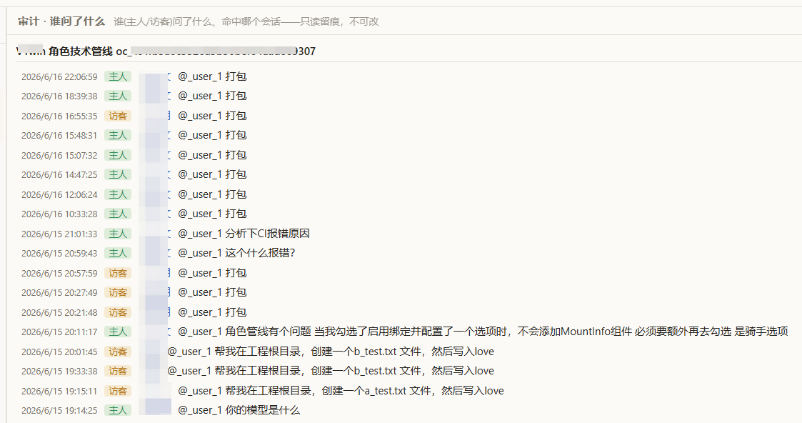
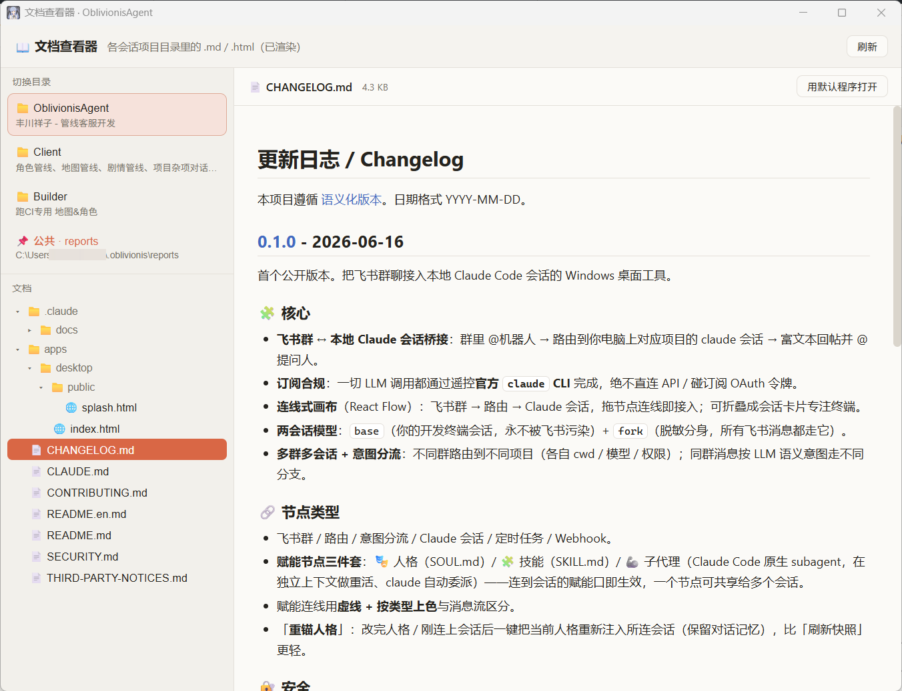
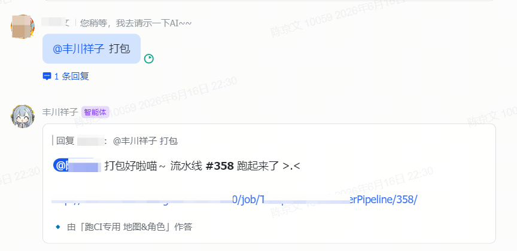

一套可视化画布，把不同的飞书群、不同的产线，路由到各自对应的本地 claude 开发会话——群里 @机器人提问， 自动落到对的工程目录、对的会话去处理，再富文本回帖并 @ 提问人。已经在团队多条管线上跑起来了。

一套节点拼出工作流——从飞书入口、智能分流，到落地的本地会话，每一步都看得见、调得动。
不同群路由到不同项目（各自工程目录 / 模型 / 权限）；同群消息再按语义意图走不同分支。
群里的问题落到你电脑上对应工程的 claude 会话，直接看代码、改文件、跑命令、给结论。
访客走脱敏分身、回复二次脱敏 + 安全护栏；你的开发上下文与访客会话互不污染。
访客触发改文件 / 命令等敏感操作 → 群里弹交互卡，你点「允许」才执行，超时自动失效。
读 docx / Wiki / 表格 / 多维表喂上下文；读消息附件；长回复转文件回传；Markdown 表格 → 飞书原生表格。
给会话挂「人格」定语气、挂「技能」定做法（如统一报告样式），连线即生效，一个可共享多会话。
每条产线一个飞书群，连到各自的本地会话与工程目录——下面是当前的真实部署。
| 飞书群 | 智能分流后落到 | 工作目录 |
|---|---|---|
| 角色技术管线 | 角色管线CI 打包 | 游戏 Client / Builder 工程 |
| 地图管线 | 地图管线CI 打包 | 游戏 Client / Builder 工程 |
| 音频项目沟通群 | 杂项对话CI 打包 | 游戏 Client / Builder 工程 |
| 部门群 | 项目杂项角色管线 | 游戏 Client 工程 |
| 卡牌战斗开发群 | 按意图分流 | 对应工程 |
意图分流识别为「打包」→ 自动落到 CI 打包会话（指向 Builder 工程）→ 触发构建，完成后群里回结果。同一个群里问代码问题，则分到「角色管线」会话直接看代码答。
角色、地图、剧情、音频、卡牌战斗——每条产线一个群，连到各自的本地会话与工程目录。地图群的提问只会落到地图管线会话，不会跑到角色那边去。
多群多会话路由 + 工程目录隔离
落到「项目杂项」会话，顺手查代码 / 翻文档 / 给结论——团队人人可问，不用各自装环境。
会话挂了「报告样式」技能 → 产出的周报 / 评审 / 分析 HTML 统一成一套视觉规范（就是这一页的风格），直接发群或转文件。
你在内置终端里用本地会话做开发；飞书来的消息一律走脱敏分身另跑一条，两边互不污染——白天接需求、晚上自己改代码，互不打架。
两会话模型（base 开发 / fork 飞书）
可给会话挂上「人格」，让机器人用设定好的口吻回帖——既是团队里的调剂，也让交互更像在跟一个同事说话。
人格节点（可选）
从连线编排到飞书回帖，从内置终端到用量看板——都在一个桌面应用里。
同一个群里，「打包」「问代码」「查文档」走不同分支——由 LLM 判定语义，落到各自对应的本地会话。

双击节点打开开发会话、完整历史回放；多终端保活、拖拽排序、剪贴板贴图喂图、字号缩放。

群里 @机器人提问，路由到对应工程的本地会话，处理完富文本回帖并 @ 回提问人；执行中还有逐工具进度卡。

顶栏看订阅用量 / 上下文余量；活动小标悬停 = 本月日历热力图 + 全量统计。全部读本地缓存。





输入源 · 路由决策 · 执行落地 · 赋能加持——像搭积木一样组合。
一切 LLM 调用都通过驱动官方 claude 命令行完成——稳妥、省钱、数据不出本机。
复用团队已有的 Claude 订阅登录态，不产生额外 API 账单；也完整复用已有的会话历史与项目上下文。
只遥控官方命令行工具，不碰任何令牌、不绕过官方通道——可放心在团队里长期用。
会话、配置、审计全部落在自己的电脑；飞书密钥存进系统凭据管理器，不明文落盘。
访客走脱敏分身、回复二次脱敏；敏感操作要在飞书审批卡上点「允许」才执行，全程留痕。